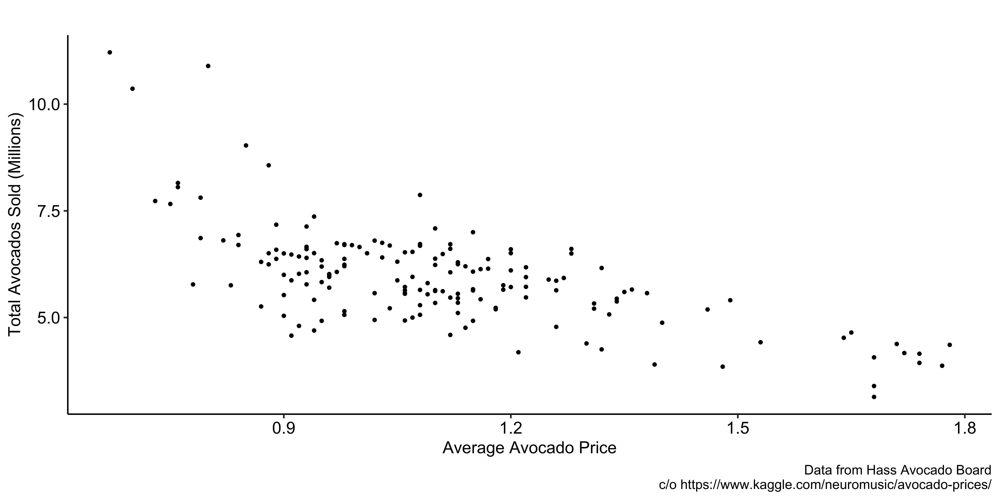
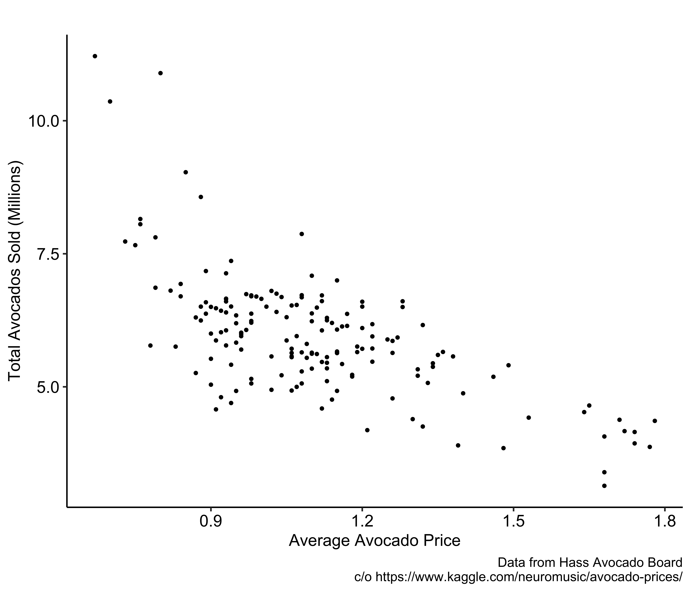
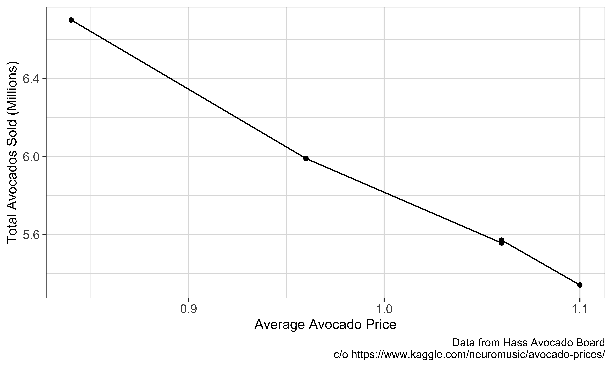

| Location | Year | P | Q |
|---|---|---|---|
| Chicago | 2003 | 75 | 2.0 |
| Peoria | 2003 | 50 | 1.0 |
| Milwaukee | 2003 | 60 | 1.5 |
| Madison | 2003 | 55 | 0.8 |
Panel data add a time dimension to cross-sectional data. The defining feature is not simply that observations come from several years; it is that we observe the same units repeatedly. A dataset containing a different random sample each year is a repeated cross-section, not a panel. Tracking the same people, firms, or places lets us compare a unit with itself. That within-unit comparison is valuable because many characteristics—ability, geography, organizational culture, or soil type—may be difficult to observe but relatively stable over the study period.
Definition
Panel data follow the same individuals, families, firms, cities, states, or other units over time.
Example
Randomly select people from a population at a given point in time
Reinterview the same people at several later dates, producing observations on wages, hours, education, and other variables for the same group in different years.
This table shows the panel structure explicitly. fcode identifies a factory, and each factory can contribute observations in multiple years. The unit of observation is therefore a factory-year, not just a factory. Variables such as employment and sales can change within a factory over time, while other factory characteristics may remain constant. Before estimating any panel model, identify the unit index, the time index, whether every unit appears in every period, and which variables actually vary within units. A fixed-effects coefficient cannot be learned from a regressor that never changes within its unit.
Panel Data as data.frame
year: yearfcode: factory idemploy: the number of employeessales: sales in USDThe central question is whether repeated observations can help with endogeneity. The answer is yes, but only for particular sources. Panel methods can remove unobserved unit characteristics that do not change over time. They cannot automatically remove time-varying confounders, measurement error, reverse causality, or feedback from past outcomes to future regressors. Throughout the lecture, keep asking two questions: what variation identifies the coefficient, and which omitted factors are eliminated by that comparison?
Can we use the panel structure to address some sources of endogeneity?
Demand for massage (cross-sectional)
| Location | Year | P | Q |
|---|---|---|---|
| Chicago | 2003 | 75 | 2.0 |
| Peoria | 2003 | 50 | 1.0 |
| Milwaukee | 2003 | 60 | 1.5 |
| Madison | 2003 | 55 | 0.8 |
P: the price of one massageQ: the number of massages received per capitaRead the four-city table as a cross-section. Cities with higher massage prices also have more massages per capita, so the raw association is positive. It would be a mistake to read this as an upward-sloping demand curve. Cross-city prices can differ because the product and the market differ. The observation illustrates an identification problem: the regression line can describe the data correctly while failing to estimate the causal response of quantity demanded to a price change.
Across the four cities, how are price and quantity associated—positively or negatively?
We need a factor that differs across cities, affects massage demand, and is related to price. Income is one possibility, but it may be observable. Massage quality is more troublesome: higher-quality services can command higher prices and attract more customers. Local occupations, tourism, demographics, and preferences could work similarly. The purpose of brainstorming is not to make an endless list. It is to understand why comparing Chicago with Peoria does not hold the demand environment fixed.
What could be causing the positive correlation?
The quality column reveals the confounder that was hidden in the first table. High-quality cities have both higher prices and higher quantities. If quality is omitted, its effect enters the error term, and price is correlated with that error. We cannot fix the problem by saying quality matters; we would need to measure it credibly and control for it. The panel strategy will instead exploit the fact that this example defines each city’s quality as constant over time.
Demand for massage (cross-sectional)
| Location | Year | P | Q | Ql |
|---|---|---|---|---|
| Chicago | 2003 | 75 | 2.0 | 10 |
| Peoria | 2003 | 50 | 1.0 | 5 |
| Milwaukee | 2003 | 60 | 1.5 | 7 |
| Madison | 2003 | 55 | 0.8 | 6 |
Key
Massage quality was hidden (omitted) and affects both price and massages per capita.
Problem
Massage quality is not observable, and thus cannot be controlled for.
Write the omitted-quality model as a regression with a composite error v. Quality affects quantity through beta two, but it is not included as a regressor. Because price is related to quality, price is related to v. This is the same omitted-variable logic from Lecture 09. The panel solution will not estimate quality’s coefficient; it will transform the data so that a time-invariant quality term cancels. That distinction matters: fixed effects control for stable differences without requiring us to observe or name each one separately.
Mathematically
Q=\beta_0+\beta_1P+v, \qquad v=\beta_2Ql+u
Endogeneity Problem
P is correlated with Ql.
| Location | Year | P | Q | Ql |
|---|---|---|---|---|
| Chicago | 2003 | 75 | 2.0 | 10 |
| Chicago | 2004 | 85 | 1.8 | 10 |
| Peoria | 2003 | 50 | 1.0 | 5 |
| Peoria | 2004 | 48 | 1.1 | 5 |
| Milwaukee | 2003 | 60 | 1.5 | 7 |
| Milwaukee | 2004 | 65 | 1.4 | 7 |
| Madison | 2003 | 55 | 0.8 | 6 |
| Madison | 2004 | 60 | 0.7 | 6 |
The two-period table contains two sources of variation. Between-city variation compares, for example, Chicago with Peoria. Within-city variation compares Chicago in 2004 with Chicago in 2003. The cross-sectional regression mixes both. Panel estimators can discard the between-city component and use only changes within each city. That is useful here because the omitted quality index varies between cities but is fixed within a city over these two years.
There are two kinds of variation:
Cross-sectional data offer only between-city variation.
Compare each city with itself. Where price rises, quantity falls; where price falls, quantity rises. The within-city association is negative even though the between-city association was positive. This is not a paradox. The comparisons answer different questions and hold different things fixed. Within a city, our constructed quality measure stays constant, so it cannot explain the year-to-year movement. The example shows why the source of variation behind a coefficient matters at least as much as its numerical sign.
Now, compare the massage price and massages per capita within each city (over time). What do you see?
Within-city comparisons help because any city characteristic that is exactly constant over time is held fixed automatically. Here massage quality does not change, so it cannot confound the relationship between changes in price and changes in quantity. Be precise about the claim: within variation removes this time-invariant omitted factor. If income, local employment, or quality changes and those changes are related to price, endogeneity can remain. Panel data create an opportunity for cleaner comparisons; they do not make every comparison causal.
Why does looking at within-city variation seem to help us estimate the effect of massage price on demand more credibly?
First differencing turns levels into changes within each city. For every variable, subtract the first-period value from the second-period value. The first observation for each city has no lag, so its difference is missing; the highlighted second row supplies one usable change. Quality’s difference is zero in every city because quality was constant. Regressing change in quantity on change in price therefore uses only within-city movement and discards all fixed level differences across cities.
Question
How do we use only within-city variation in a regression framework?
First differencing
One approach is to compute the changes in price and quantity within each city (\Delta P and \Delta Q) and then regress \Delta Q on \Delta P.
First-differenced Data
| Location | Year | P | Q | Ql | P_dif | Q_dif | Ql_dif |
|---|---|---|---|---|---|---|---|
| Chicago | 2003 | 75 | 2.0 | 10 | NA | NA | NA |
| Chicago | 2004 | 85 | 1.8 | 10 | 10 | -0.2 | 0 |
| Peoria | 2003 | 50 | 1.0 | 5 | NA | NA | NA |
| Peoria | 2004 | 48 | 1.1 | 5 | -2 | 0.1 | 0 |
| Milwaukee | 2003 | 60 | 1.5 | 7 | NA | NA | NA |
| Milwaukee | 2004 | 65 | 1.4 | 7 | 5 | -0.1 | 0 |
| Madison | 2003 | 55 | 0.8 | 6 | NA | NA | NA |
| Madison | 2004 | 60 | 0.7 | 6 | 5 | -0.1 | 0 |
Key
Variation in quality is eliminated after first differencing because quality is constant within each city.
The subscripts separate the city dimension i from the time dimension t. Subtract the period-one equation from the period-two equation. The intercept cancels because it is the same in both periods, and any time-invariant quality term cancels because its change is zero. What remains is a regression of changes. For beta one to have a causal interpretation, the change in price must still be unrelated to the change in the remaining error. A time-varying demand shock can violate that condition, so differencing solves a specific omitted-variable problem rather than all endogeneity.
A new way of writing a model
Q_{i,t}=\beta_0+\beta_1P_{i,t}+\beta_2Ql_{i,t}+u_{i,t}
i: indicates cityt: indicates timeFirst differencing
Q_{i,1}=\beta_0+\beta_1P_{i,1}+\beta_2Ql_{i,1}+u_{i,1}
Q_{i,2}=\beta_0+\beta_1P_{i,2}+\beta_2Ql_{i,2}+u_{i,2}
\Rightarrow
\Delta Q_i=\beta_1\Delta P_i+\beta_2\Delta Ql_i+\Delta u_i
Endogeneity Problem?
Since Ql_{i,1}=Ql_{i,2}, \Delta Ql_i=0, so
\Delta Q_i=\beta_1\Delta P_i+\Delta u_i.
First differencing removes endogeneity caused by time-invariant massage quality. It does not remove endogeneity from time-varying omitted factors or reverse causality; we still need \Delta P_i to be uncorrelated with \Delta u_i.
The two regressions demonstrate the reversal. OLS in levels uses the mixture of between- and within-city variation and produces the positive cross-sectional relationship. The first-differenced regression keeps one change per city and produces the negative within-city relationship. With only four cities, this is an illustration rather than credible empirical evidence. Focus on why the coefficient changes: differencing removes the stable quality differences that drove the positive comparison across cities.
Data
OLS on the original data:
OLS on the first-differenced data:
The takeaway from the two-period example is narrow but powerful. When an omitted confounder is constant within a unit, comparing changes within the unit eliminates it. First differencing is one way to operationalize that comparison. It requires repeated observations on the same units, and it identifies the coefficient only from units whose explanatory variable changes. It does not solve confounding from factors that change over time, so the remaining change in the regressor still needs an exogeneity argument.
When an omitted variable affecting both the dependent and independent variables is constant over time, using within-unit variation can eliminate the bias caused by that variable.
First-differencing the data and regressing changes on changes removes between-unit variation.
Of course, first-differencing is possible only because the same cross-sectional units are observed multiple times over time.
With more than two periods, demeaning is a convenient way to isolate within-unit variation. For each city, compute its time average and subtract that average from every observation. A positive deviation means the variable is above that city’s usual level; a negative deviation means it is below. Because a time-invariant variable always equals its own time average, all of its deviations are zero. The highlighted columns show the transformed variables that feed the fixed-effects regression.
Within transformation
If we have lots of years of data, we could, in principle, compute all of the first differences (i.e., 2004 versus 2003, 2005 versus 2004, etc.) and then run a single regression. But there is an easier way.
Instead of thinking of each year’s observation in terms of how much it differs from the prior year for the same city, let’s think about how much each observation differs from the average for that city.
Example
How much does each observation differ from its city average?
| Location | Year | P | P_mean | P_dev | Q | Q_mean | Q_dev | Ql | Ql_mean | Ql_dev |
|---|---|---|---|---|---|---|---|---|---|---|
| Chicago | 2003 | 75 | 80.0 | -5.0 | 2.0 | 1.90 | 0.10 | 10 | 10 | 0 |
| Chicago | 2004 | 85 | 80.0 | 5.0 | 1.8 | 1.90 | -0.10 | 10 | 10 | 0 |
| Peoria | 2003 | 50 | 49.0 | 1.0 | 1.0 | 1.05 | -0.05 | 5 | 5 | 0 |
| Peoria | 2004 | 48 | 49.0 | -1.0 | 1.1 | 1.05 | 0.05 | 5 | 5 | 0 |
| Milwaukee | 2003 | 60 | 62.5 | -2.5 | 1.5 | 1.45 | 0.05 | 7 | 7 | 0 |
| Milwaukee | 2004 | 65 | 62.5 | 2.5 | 1.4 | 1.45 | -0.05 | 7 | 7 | 0 |
| Madison | 2003 | 55 | 57.5 | -2.5 | 0.8 | 0.75 | 0.05 | 6 | 6 | 0 |
| Madison | 2004 | 60 | 57.5 | 2.5 | 0.7 | 0.75 | -0.05 | 6 | 6 | 0 |
Note
We call this transformation the within transformation, or demeaning.
The fixed-effects regression uses the demeaned quantity and price variables. Quality has no remaining variation because each city’s quality is constant, so Ql_dev equals zero throughout. The price coefficient is estimated from whether quantity is unusually high or low when price is unusually high or low relative to the same city’s average. This is the multi-period version of comparing a city with itself.
Model
Q_devP_devKey
Because Ql is constant within each city, demeaning makes Ql_dev equal to zero.
Average the T equations for a city and subtract that average equation from each original equation. The intercept disappears, and every variable is expressed as a deviation from its city mean. The quality term is still shown at this stage so that we can see the algebra. In the next tab, its deviation becomes zero because quality is constant over time. The transformed disturbance is also demeaned, which is why the exogeneity condition for fixed effects must account for errors across all periods.
Q_{i,1}=\beta_0+\beta_1P_{i,1}+\beta_2Ql_{i,1}+u_{i,1}
Q_{i,2}=\beta_0+\beta_1P_{i,2}+\beta_2Ql_{i,2}+u_{i,2}
\vdots
Q_{i,T}=\beta_0+\beta_1P_{i,T}+\beta_2Ql_{i,T}+u_{i,T}
\Rightarrow
Q_{i,t}-\bar Q_i=\beta_1(P_{i,t}-\bar P_i)+\beta_2(Ql_{i,t}-\overline{Ql}_i)+(u_{i,t}-\bar u_i)
Since quality equals the same value in every period for a city, its time average is that same value. Subtracting the two gives zero, and the omitted quality effect vanishes from the transformed equation. Price may be correlated with the level of quality, but that between-city correlation is no longer used. Other endogeneity can survive. In particular, a temporary demand shock can affect both this period’s quantity and price, leaving transformed price correlated with the transformed error.
Ql_{i,1}=Ql_{i,2}=\dots=Ql_{i,T}=\overline{Ql}_i
\Rightarrow
Q_{i,t}-\bar Q_i=\beta_1(P_{i,t}-\bar P_i)+(u_{i,t}-\bar u_i)
The within transformation removes the endogeneity caused by time-invariant Ql. Other sources of endogeneity may remain.
Consider the following general model
y_{i,t}=\beta_1 x_{i,t} + \alpha_i + u_{i,t}
This is the general fixed-effects algebra. Alpha i collects all time-invariant characteristics of unit i, observed or unobserved. It can be correlated with x, which is exactly the correlation pooled OLS cannot tolerate. When we average the model over time, alpha i remains alpha i because the same value is repeated in every period. The bars denote unit-specific time averages; they are not averages across different individuals.
For each i, averaging this equation over time gives
\frac{1}{T}\sum_{t=1}^T y_{i,t}=\beta_1\frac{1}{T}\sum_{t=1}^T x_{i,t}+\alpha_i+\frac{1}{T}\sum_{t=1}^T u_{i,t}
We use \bar z_i to denote the time average of z_{i,t} for unit i. Thus,
\bar y_i=\beta_1\bar x_i+\alpha_i+\bar u_i.
Note that \frac{\sum_{t=1}^T \alpha_{i}}{T} = \alpha_i
Subtract the unit-average equation from the original observation. Alpha i minus itself is zero, so all stable unit characteristics are removed in one step. We do not estimate a separate coefficient for each unobserved characteristic and do not need to observe them. The transformation also removes every observed regressor that is constant within a unit. That is the cost of relying exclusively on within-unit variation.
Subtracting the equation of the average from the original model,
y_{i,t}-\bar y_i=\beta_1(x_{i,t}-\bar x_i)+(u_{i,t}-\bar u_i)+\alpha_i-\alpha_i
Important
\alpha_i is gone!
After demeaning, estimate beta one by OLS using the transformed outcome and transformed regressor. The coefficient answers a within-unit question: when x differs from its usual value for a unit, how does y differ from its usual value? Units with no within variation in x provide no identifying information for beta one. Software performs this transformation efficiently, often without creating the demeaned variables explicitly.
We then regress (y_{i,t}-\bar{y}_i) on (x_{i,t}-\bar{x}_i) to estimate \beta_1.
Removing alpha i is not the end of the identification argument. The demeaned regressor must be uncorrelated with the demeaned disturbance. A standard sufficient condition is strict exogeneity: every period’s error has conditional mean zero given the unit’s entire history of regressors and its fixed effect. This rules out contemporaneous confounding and also feedback from today’s shock to future x. For example, if an unexpected increase in y this year causes the unit to choose a different x next year, strict exogeneity fails even though x may be predetermined at the start of each period.
Here is the model after within-transformation:
\begin{align*} y_{i,t}-\bar{y}_i=\beta_1 (x_{i,t} -\bar{x}_i) + (u_{i,t} -\bar{u}_i) \end{align*}So,
x_{i,t}-\bar x_i must be uncorrelated with u_{i,t}-\bar u_i.
Strict exogeneity
A sufficient condition is
E[u_{i,t}\mid x_{i,1},x_{i,2},\dots,x_{i,T},\alpha_i]=0 \qquad\text{for every }t.
Thus, regressors in any period must be unrelated to shocks in every period. For example, E[u_{i,1}\mid x_{i,4},\alpha_i]=0.
This command estimates the demeaned massage equation directly. The input columns are already deviations, so no fixed-effects formula is needed here. The price coefficient matches the first-difference result in a two-period panel; with exactly two periods, demeaning and first differencing contain the same identifying information, differing only by scale. In applications, we generally let fixed-effects software operate on the original variables rather than constructing deviations ourselves.
Fixed effects estimation
Regress within-transformed Q on within-transformed P:
There are two algebraically equivalent ways to remove unit-specific intercepts. The within estimator subtracts unit means. The least-squares dummy-variable estimator keeps the original data and gives each unit its own intercept through indicator variables. Both produce the same slope coefficients when specified consistently. Demeaning makes the source of variation transparent; dummy variables make the intercept differences explicit. Modern software can absorb fixed effects without literally adding thousands of dummy columns.
Important
The two approaches below will result in the same coefficient estimates (mathematically identical).
You can use the original data (no within-transformation) and include dummy variables for all the cities except one.
With four cities and an overall intercept, we create only three city indicators. Chicago is the omitted reference category. Each included dummy allows its city’s intercept to differ from Chicago’s. Including all four indicators together with an intercept would create perfect multicollinearity, the dummy-variable trap. These indicators absorb any fixed city characteristic, not only the quality variable we happened to name.
The regression uses the original quantity and price levels plus the three city indicators. Compare the coefficient on price with the demeaned regression: it is exactly the same. The dummy coefficients themselves describe level differences relative to Chicago, but they are not our main target. Their role is to prevent stable cross-city differences from contributing to the estimated price slope.
Note that the coefficient estimate on P is exactly the same as the one we saw earlier when we regressed Q_dev on P_dev.
Fixed effects change the comparison behind a coefficient. City fixed effects eliminate comparisons between different cities’ average levels, so beta one is learned from price changes within the same city. Generalize that rule: firm fixed effects use within-firm variation, farmer fixed effects use within-farmer variation, and so on. This can be cleaner when stable differences confound the cross-section, but the correct fixed effect is dictated by the assignment mechanism and the level at which the troublesome unobservables operate.
By including individual dummies (individual fixed effects), you effectively remove between-city variation and estimate \beta_1 using within-city variation.
Very important
More generally, including fixed effects for a category (such as city) absorbs differences between its groups and identifies other coefficients from variation within those groups.
In practice, keep the variables in their original units and tell feols which fixed effect to absorb after the vertical bar. This reduces coding mistakes, handles many groups efficiently, and reports the model in a recognizable form. The slope regressors go before the bar; fixed-effect identifiers go after it. The software internally obtains the same within estimator we derived. We still need to choose fixed effects based on the research design rather than treating the formula as a mechanical recipe.
Advice
In practice
We will use the fixest package.
Syntax
FE: the name of the variable that identifies the cross-sectional units that are observed over time (Location in our example)dep_var: untransformed dependent variableindep_vars: list of (non-transformed) independent variablesHere the original two-period data go directly into feols, with Location specified as the fixed effect. The estimated coefficient on price agrees with both the manually demeaned and dummy-variable regressions. This equality is a useful diagnostic when learning the syntax. In a real dataset, also inspect how many observations and fixed-effect groups remain and whether the regressor has sufficient within-group variation.
Data
Example
Random effects retains both within- and between-unit information by imposing a stronger orthogonality assumption: the unit effect alpha i must be uncorrelated with the regressors in every period. If credible, RE can be more efficient and can estimate coefficients on variables that never change within a unit. If that assumption fails, standard RE is inconsistent, while FE can remain consistent under strict exogeneity. The choice should follow substantive knowledge about how x is assigned, not a preference for whichever estimator yields smaller standard errors.
How is it different from the FE model?
Random effects (RE) assumes \alpha_i is uncorrelated with every explanatory variable in every period.
Under that assumption, RE is consistent and can be more efficient than FE. It can also estimate coefficients on time-invariant regressors.
If \alpha_i is correlated with the explanatory variables, the standard RE estimator is inconsistent, whereas FE remains consistent under strict exogeneity.
The choice between FE and RE should be based on the research design and the plausibility of the RE orthogonality assumption.
Note
We do not develop RE estimation further in this lecture.
This application asks for the demand response to avocado price using weekly California data. The scatterplot is descriptive: it shows how total sales and average price move together, not yet a causal demand curve. Price is an equilibrium outcome determined jointly by supply and demand. Weather, promotions, supply disruptions, and demand shifts can move both variables. We therefore need to identify a subset of price variation that is plausibly unrelated to unobserved demand shocks.

Objective
You are interested in understanding the impact of avocado price on its consumption.
The raw relationship is negative, which is consistent with downward-sloping demand, but the sign alone does not establish causality. A supply increase can lower price and raise quantity, also producing a negative association. A positive demand shock can raise both price and sales. Because market price and quantity are jointly determined, reverse causality or simultaneity is the default concern. We need institutional knowledge about when and how prices are set before treating the fitted relationship as a demand effect.
Observations
Question
If you regress avocado sales on price, is the coefficient estimator necessarily unbiased?
No.

The proposed timing rule is an identifying assumption, not a fact supplied by the data. Suppose suppliers set all weekly prices at the start of a month and do not revise them after seeing realized weekly demand. Then demand shocks later in that month cannot feed back into those planned prices. Month fixed effects remove all differences between months, leaving weekly price variation within a month. The design is credible only if planned within-month prices are also unrelated to other weekly demand shocks such as promotions or holidays.
Problem
Reverse Causality: Price affects demand and demand affects price.
contextual knowledge
Now suppose that, after studying the supply and purchasing mechanism in the avocado market, you can credibly defend the following assumption:
At the beginning of each month, avocado suppliers set the price for each week of that month and do not revise those prices in response to realized weekly demand.
Under this assumption, within-month weekly price changes do not respond to realized weekly demand shocks. This breaks the reverse-causality channel within a month, provided the planned prices are also unrelated to other within-month demand shocks.
The proposed strategy therefore uses variation in demand and price within months while absorbing variation between months.
The March 2015 points illustrate the variation that would remain after adding month-by-year fixed effects. We compare weeks within this single pricing period rather than March with February or with March in another year. Under the hypothetical price-setting rule, these movements are candidate exogenous price variation. The graph cannot verify the assumption; it only helps us see which observations make the comparison. Credibility comes from evidence about the pricing mechanism and the absence of correlated within-month demand shocks.
The figure below presents avocado sales and prices in March 2015. Under the stated timing assumption, these within-month price changes are candidate identifying variation.

With three months of weekly observations, include an indicator for each month, omitting one reference group. This absorbs every factor that is constant within a month but differs across the three months. The price coefficient is then estimated from week-to-week price variation inside each month. The answer follows the assumed timing of price assignment: the fixed-effect group should match the period over which common confounders and the pricing plan are shared.
We have three months of avocado purchase and price observed weekly.
Question
What should we do?
Over two years, month-of-year indicators are not enough. A January dummy would group January 2015 with January 2016 and allow the regression to use their between-year difference. The design calls for a separate fixed effect for each calendar month-year, such as January 2015, February 2015, and January 2016. That specification keeps only weekly deviations within the same month-year and matches the hypothetical monthly price-setting rule.
We have two years of avocado purchase and price observed weekly.
Question
What should we do?
Include month-year dummy variables.
Month-of-year dummies alone are insufficient because, for example, January 2014 and January 2015 would belong to the same group. The regression would still use variation between those two month-years.
Fixed effects are not a substitute for understanding the market. The raw price-sales relationship mixes many sources of variation, some endogenous. Contextual knowledge suggests which comparisons might be cleaner, and fixed effects let us isolate those comparisons. In this illustration, the pricing rule is hypothetical; an actual study would need evidence that prices were set in advance and that no other within-month shocks jointly affected planned price and demand. The general workflow is mechanism first, specification second.
Message 1
Understanding the data-generating process reveals why the raw relationship between avocado price and sales need not identify the causal effect of price on demand.
Message 2
A credible causal design requires contextual knowledge that identifies which price variation is plausibly unrelated to unobserved demand shocks. The pricing rule here is hypothetical and is used only to illustrate that logic.
Year fixed effects are indicators shared by every observation in a calendar year. The toy table makes the pattern visible: all four units have FE_2015 equal to one in 2015, and so forth. With an intercept, one year is omitted as the reference. Do not confuse year fixed effects with unit fixed effects. Unit effects compare an observation with the same unit’s average; year effects remove shocks common to all units at a date.
A set of year indicators, each equal to 1 in a particular year and 0 otherwise.
A year coefficient captures a common shift relative to the omitted year, holding the included covariates and other fixed effects constant. In the log-income example, sigma one compares 2012 with the 2014 base year. A coefficient of 0.05 is approximately a five-percent difference; exponentiating gives the exact 5.13 percent. Year effects can absorb recessions, inflation, nationwide policy, or other aggregate shocks, but they do not absorb shocks that vary differently across units within the same year.
They absorb shocks common to all units in a particular year, measured relative to an omitted base year.
Example
Education and wage data from 2012 to 2014,
\log(income) = \beta_0 + \beta_1 educ + \beta_2 exper + \sigma_1 FE_{2012} + \sigma_2 FE_{2013}
\sigma_1: captures the difference in \log(income) between 2012 and 2014 (the base year)
\sigma_2: captures the difference in \log(income) between 2013 and 2014 (the base year)
Interpretation
\sigma_1=0.05 means that, holding the included covariates fixed, expected income in 2012 is approximately 5\% higher than in 2014. The exact percentage is 100[\exp(0.05)-1]\approx5.13\%.
Annual panels often include year effects because trending regressors can otherwise pick up a common economic trend. If education rises over time while the entire economy also raises incomes, a regression without year effects may attribute part of that aggregate growth to education. Adding year effects removes the common year component. It is a sensible default when such shocks are plausible, but it is not costless: a variable that takes the same value for everyone in a year is perfectly collinear with the year indicators.
Recommendation
Including year fixed effects is often a sensible default in annual panel data when common year shocks could confound the relationship of interest.
Why?
Year fixed effects absorb aggregate shocks shared by all units in a given year, relative to the base year.
Thus, unobserved factors common to all units in a particular year are removed from the error term.
Example
Economic trend in:
\log(income) = \beta_0 + \beta_1 educ + \sigma_1 FE_{2012} + \sigma_2 FE_{2013}
Education is non-decreasing through time
Economy might have either been going down or up during the observed period
Without year fixed effects, \beta_1 may partly capture the overall economic trend.
The fixed-effects portion after the vertical bar can contain multiple dimensions. id + year absorbs both stable person differences and common year shocks. The education coefficient is then identified from education changes within a person after netting out the average movement in each year. The caveat explains an identification limit: with a full set of year effects, a national variable that changes only by year has no independent variation left. Dropping year effects just to recover its coefficient may reintroduce aggregate confounding.
To include year fixed effects alongside individual fixed effects, add the year variable to the fixed-effects portion of the formula:
Caveats
Year fixed effects are perfectly collinear with variables that vary only over time and not across units.
Consequently, a coefficient on a time-only variable cannot be estimated separately from a full set of year effects. Identifying it requires a different source of variation or additional structure; simply omitting year effects may introduce confounding from other aggregate shocks.
Panel observations for the same unit are usually not independent. An unobserved shock can persist, making this year’s error related to next year’s error for the same person, firm, or state. This is serial correlation. Error variance can also differ across units or time. Fixed effects address certain omitted variables in the conditional mean; they do not automatically make the errors homoskedastic or independent. Standard-error estimation must reflect the dependence structure separately from coefficient estimation.
Heteroskedasticity
As with cross-sectional OLS, ignoring heteroskedasticity generally produces inconsistent standard-error estimates.
Serial Correlation
Errors for the same unit may be correlated over time; this is called serial correlation.
If the exogeneity assumptions hold, serial correlation does not by itself bias the fixed-effects slope, but conventional standard errors can be badly wrong. Persistent treatments and outcomes make the problem especially severe because repeated observations from one unit contain less independent information than ordinary formulas assume. The Bertrand, Duflo, and Mullainathan placebo exercise makes the stakes concrete: a nominal five-percent procedure rejected far too often when grouped dependence was ignored. The lesson is to align inference with the level at which shocks are correlated.
Like heteroskedasticity, unmodeled serial correlation generally makes conventional standard errors inconsistent.
Serial correlation alone does not bias the FE coefficient estimator when the required exogeneity assumptions hold, but it does affect efficiency and inference.
Important
Accounting for serial correlation can substantially change conclusions about statistical significance.
With persistent outcomes and treatments, ignoring positive serial correlation often understates standard errors, inflates t-statistics, and causes excessive rejection of true null hypotheses.
Bertrand, Duflo, and Mullainathan (2004)
Examined inference problems using placebo-law simulations in Current Population Survey data on women’s wages.
Randomly generate placebo treatment laws that have no true effect.
Regress the outcome on the placebo treatment and controls.
Test whether the placebo treatment appears statistically significant.
In their baseline CPS microdata specification without correction for grouped errors, they rejected the null in 67.5\% of simulations using a nominal 5\% test.
Clustering by unit allows arbitrary heteroskedasticity and serial correlation within each unit while relying on independence across units and a sufficiently large number of clusters. In feols, cluster = ~id requests that estimator. Clustering is not a universal correction: it does not handle common shocks across units, and conventional cluster approximations can perform poorly with few clusters. This example has only four people, so the command teaches syntax, not defensible inference. In an application, justify the cluster level from the error-generating and treatment-assignment processes.
SE robust to heteroskedasticity and serial correlation
With many independent units, clustering by unit (e.g., state, county, or farmer) allows arbitrary heteroskedasticity and within-unit serial correlation.
Unit-clustered standard errors do not address dependence across units, and conventional cluster asymptotics can be unreliable with few clusters.
R implementation
The cluster argument specifies the clustering variable:
This toy dataset has only four clusters, so the output illustrates syntax rather than reliable cluster-based inference.